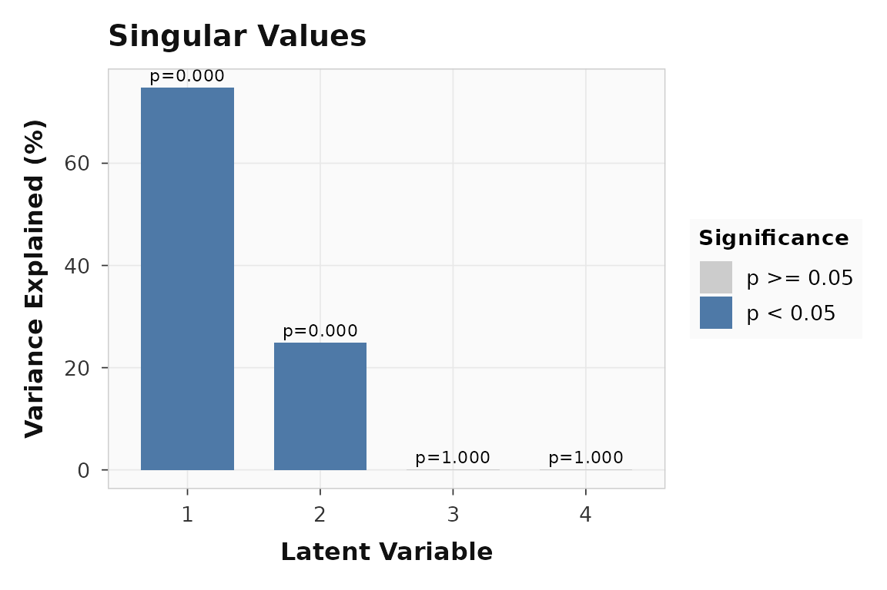
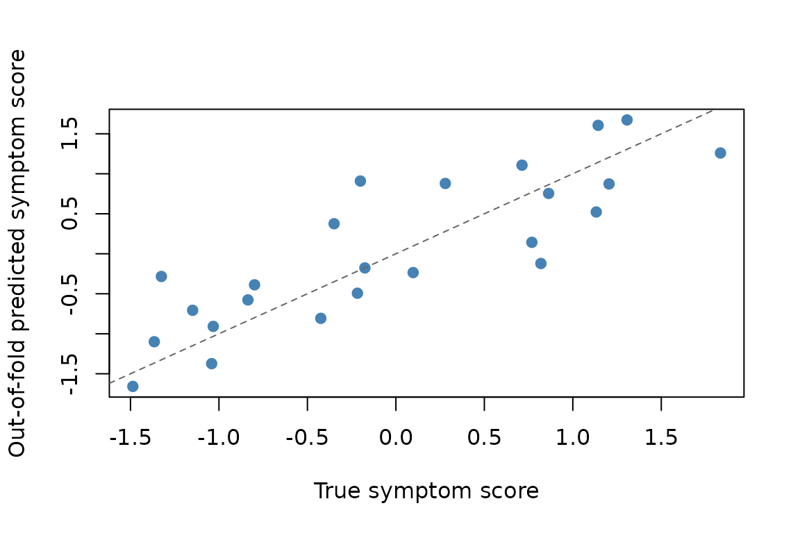
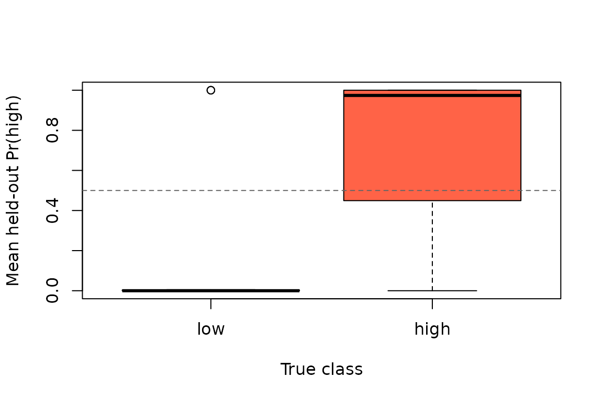

Predictive Measures and Resampling Inference
Source:vignettes/predictive-measures.Rmd
predictive-measures.RmdYou can now ask two different questions of the same PLS analysis.
First, does the latent-variable decomposition look non-random and stable
under the usual PLS resampling tools? Second, can the fitted score space
support honest out-of-fold prediction for held-out subjects?
plsrri now supports both.
This article shows how predictive measures complement, rather than replace, the existing permutation, bootstrap, and split-half analyses:
- permutation on a
pls_resultasks whether an LV is stronger than expected under the null decomposition - bootstrap asks which voxel or behavior relationships are stable
- predictive cross-validation asks whether the learned score space generalizes to held-out subjects
What does a predictive quick win look like?
This vignette uses one synthetic brain-behavior dataset throughout. The quick win is a classification analysis: can you recover a held-out high-vs-low subject label from the score space learned inside each training fold?
round_numeric_df(cls_result$summary)
#> metric mean sd
#> 1 accuracy 0.79 0.08
#> 2 auc 0.82 0.07
round_numeric_df(cls_result$boot_ci[, c("metric", "estimate", "lower", "upper")])
#> metric estimate lower upper
#> accuracy accuracy 0.79 0.53 0.94
#> auc auc 0.81 0.60 0.97The key point is that this object is not another decomposition summary. It is an out-of-fold predictive result built from nested cross-validation, with its own permutation null and bootstrap intervals.
What data are we using?
The example has 24 subjects, 2 conditions, 90 features, and two behavior measures. One subject-level latent factor drives a brain block, the symptom measure, and the binary diagnosis; a second block captures condition structure.
head(data.frame(
subject = seq_len(6),
symptom_score = round(symptom_score[1:6], 2),
diagnosis = diagnosis[1:6]
))
#> subject symptom_score diagnosis
#> 1 1 -1.37 low
#> 2 2 -1.49 low
#> 3 3 -1.15 low
#> 4 4 -1.03 low
#> 5 5 -1.04 low
#> 6 6 -1.33 lowWhat does ordinary PLS inference tell you first?
Start with the decomposition-side questions. Here the behavior PLS fit asks whether there is a dominant brain-behavior latent variable, and whether the behavior links are stable under bootstrap resampling.
round(cbind(
pvalue = significance(fit),
variance = singular_values(fit, normalize = TRUE)
), 2)
#> pvalue variance
#> LV1 0 74.80
#> LV2 0 24.97
#> LV3 1 0.15
#> LV4 1 0.09
plot_singular_values(fit)
The decomposition-side permutation test is about latent variables, not held-out prediction. LV1 dominates the singular value spectrum.
LV1 is clearly non-null in the ordinary PLS sense. That still does not tell you whether held-out subjects can be predicted. It only tells you that the brain-behavior decomposition is stronger than the null decomposition generated by row shuffling.
Bootstrap intervals answer a different question again: which specific brain-behavior links are stable?
round_numeric_df(corr_table)
#> loading lower upper
#> 1 baseline / symptom -0.96 -0.79
#> 2 baseline / reserve 0.89 0.97
#> 3 challenge / symptom -0.97 -0.86
#> 4 challenge / reserve 0.93 0.98All four behavior-by-condition intervals stay away from zero. That supports the claim that the symptom/reserve pattern is stable, but it is still not a held-out predictive statement.
What does predictive regression add?
Now switch from decomposition inference to honest prediction. The regression target is the subject-level symptom score, not the repeated behavior matrix used to fit the decomposition.
round_numeric_df(reg_result$summary)
#> metric mean sd
#> 1 rmse 0.53 0.10
#> 2 mae 0.45 0.08
#> 3 rsq 0.67 0.15
round_numeric_df(reg_result$boot_ci[, c("metric", "estimate", "lower", "upper")])
#> metric estimate lower upper
#> rmse rmse 0.53 0.39 0.67
#> mae mae 0.45 0.34 0.58
#> rsq rsq 0.70 0.48 0.83For speed, this vignette uses only 9 predictive label permutations, so the smallest attainable predictive p-value is 0.1. In a real analysis you would increase this substantially.
reg_result$perm_test
#> $metric
#> [1] "rmse"
#>
#> $observed
#> [1] 0.5251243
#>
#> $null_distribution
#> [1] 1.0656167 1.1893644 1.3808130 0.9353916 1.1422777 1.1948747 1.1586831
#> [8] 1.2519858 1.1399975
#>
#> $p_value
#> [1] 0.1
#>
#> $num_perm
#> [1] 9The continuous outcome is recoverable out of sample: the held-out
R^2 is 0.67, and the observed RMSE is smaller than the
median value from the shuffled-label null.

Each point is one held-out subject, aggregated across outer folds. Predictive validation asks whether these subject-level estimates track the true outcome.
What does predictive classification add?
The same score space can also be used for classification. Here the target is a binary high-vs-low diagnosis derived from the same latent factor.
round_numeric_df(cls_result$summary)
#> metric mean sd
#> 1 accuracy 0.79 0.08
#> 2 auc 0.82 0.07
cls_result$perm_test
#> $metric
#> [1] "accuracy"
#>
#> $observed
#> [1] 0.7916667
#>
#> $null_distribution
#> [1] 0.4583333 0.5833333 0.5000000 0.6666667 0.6666667 0.5000000 0.5416667
#> [8] 0.5000000 0.4583333
#>
#> $p_value
#> [1] 0.1
#>
#> $num_perm
#> [1] 9
round_numeric_df(cls_result$boot_ci[, c("metric", "estimate", "lower", "upper")])
#> metric estimate lower upper
#> accuracy accuracy 0.79 0.53 0.94
#> auc auc 0.81 0.60 0.97Again, the predictive inference is about held-out performance. Accuracy and AUC are computed from out-of-fold predictions, and the predictive permutation test compares those numbers to a null generated by re-running the full nested cross-validation workflow with shuffled subject labels.

Held-out class probabilities aggregated to one row per subject. The horizontal line marks a 0.5 decision threshold.
How do the inferential layers complement each other?
These tools are strongest when you treat them as complementary rather than interchangeable:
comparison
#> question
#> 1 Is the dominant latent variable stronger than a null decomposition?
#> 2 Which behavior relationships are stable under bootstrap resampling?
#> 3 Can the latent score space predict a held-out continuous outcome?
#> 4 Can the latent score space classify held-out subjects?
#> diagnostic
#> 1 LV1 permutation p = 0.000; variance explained = 74.8%
#> 2 4 of 4 behavior intervals exclude zero
#> 3 OOF R^2 = 0.67; RMSE = 0.53
#> 4 OOF accuracy = 0.79; AUC = 0.82You can read the table as four distinct questions:
- Decomposition permutation: is there a latent variable stronger than a null PLS decomposition?
- Decomposition bootstrap: which loadings or correlations are stable?
- Predictive regression/classification: do those learned score patterns generalize to held-out subjects?
Split-half validation fits beside the first two, not the last one. It
asks whether the decomposition itself replicates across random halves of
the data, while evaluate_prediction() asks whether a
training-fit score space supports honest out-of-fold prediction.
Where should you go next?
| Goal | Resource |
|---|---|
| Core task PLS workflow | vignette("plsrri") |
| Ordinary behavior PLS workflow | vignette("behavior-pls") |
| Multiblock and seed methods | vignette("multiblock-and-seed") |
| Predictive entry point | ?evaluate_prediction |
| Decomposition-side significance | ?significance |
| Bootstrap confidence intervals | ?confidence |